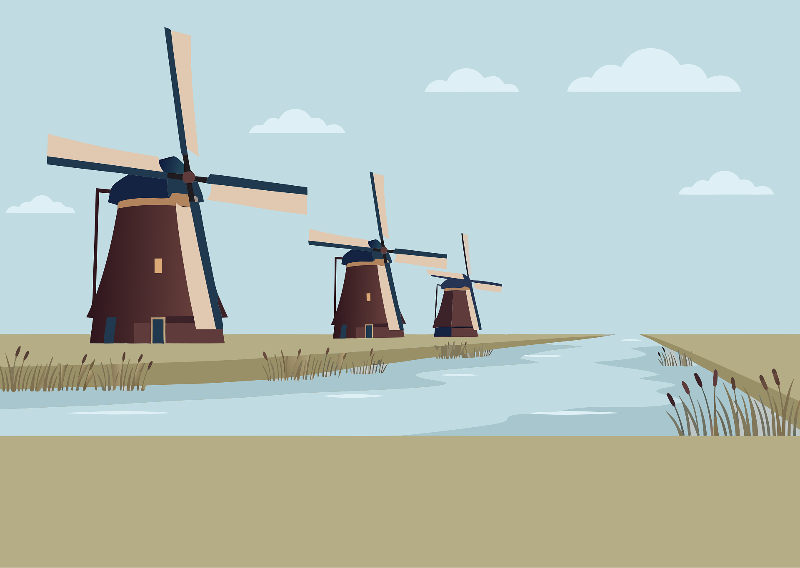
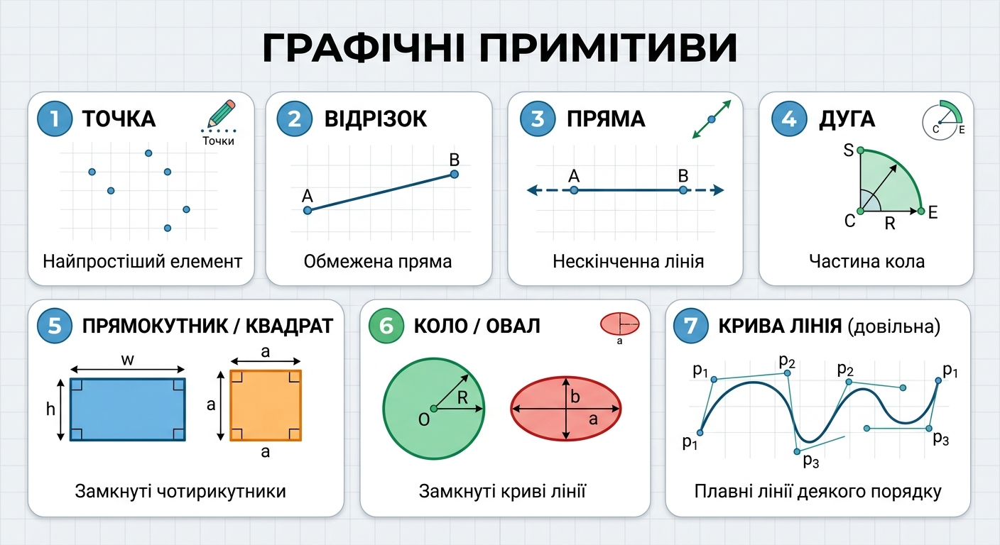
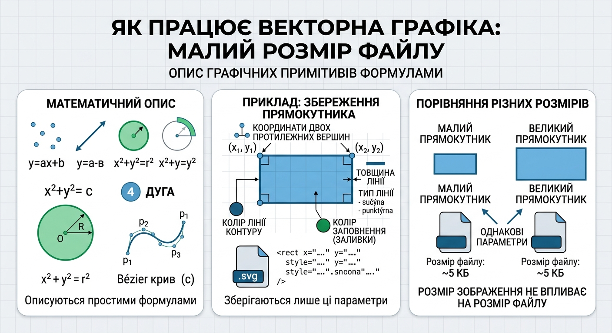

Векторна графіка — спосіб представлення об'єктів і зображень в комп'ютерній графіці, заснований на використанні елементарних геометричних об'єктів (рис. 1). Об'єкти векторної графіки є графічними зображеннями математичних функцій.

Рис. 1. Приклад векторного малюнка
Векторна графіка представляє зображення як набір найпростіших геометричних фігур, графічних примітивів.
До графічних примітивів відносяться такі прості фігури:

Також використовуються більш складні фігури, наприклад, ламані лінії, криволінійні відрізки (в комп'ютерній графіці для їх позначення є загальний термін "крива"), різні багатокутники, текст і т.д.
Растрове зображення можна розглядати як примітивний об'єкт, представлений як прямокутник.
У загальному випадку будь-який графічний примітив являє собою лінію, для якої можна задати певний колір (аж до прозорого), товщину і вид (наприклад, суцільна, штрихова, штрихпунктирна та ін.).
Якщо лінія замкнута, то для такого графічного об'єкта можна задавати і змінювати колір внутрішньої області, так звану заливку об'єкта. Для цього можливо використовувати будь-які комбінації кольорів.
Використовуючи графічні примітиви різних форм і кольорів, варіюючи їх взаємне розташування, можна створювати досить складні малюнки. Цей процес нагадує техніку створення аплікації — зображення складається з окремих фрагментів різної форми і забарвлення.
При відтворенні перекриваються об'єктів має значення їх порядок.
Векторний малюнок зберігається як набір координат, векторів і інших чисел, що характеризують набір примітивів.

Оскільки кожен графічний примітив можна описати математично у вигляді нескладних формул, то для зберігання векторного зображення потрібно зовсім мало місця, причому розмір зображення не впливає на розмір файлу.
Дійсно, для збереження у файлі векторного зображення деякого прямокутника необхідно зберегти тільки наступні параметри:
Для створення зображення векторного формату, відображуваного на растровому пристрої, використовуються перетворювачі, програмні або апаратні (вбудовані в відеокарту).
Зображення у векторному форматі дає простір для редагування. Зображення може без втрат масштабуватися, повертатися, деформуватися. Тривимірні об'єкти і простору у векторній графіці імітувати простіше, ніж в растровій. Кожне таке перетворення виконується наступним чином: старе зображення (або фрагмент) стирається, і замість нього будується нове. Математичний опис векторного малюнка залишається колишнім, змінюються тільки значення деяких змінних, наприклад коефіцієнтів.
Векторні операції. Векторні графічні редактори, як правило, представляють можливість обертати, переміщати, відображати, розтягувати, нахиляти, деформувати, виконувати відображення в себе, комбінувати примітиви в складніші об'єкти.
Більш витончені перетворення включають об'єднання, доповнення, перетин і т.д.
Inkscape — це високоякісний професійний інструмент для роботи з векторною графікою для Windows, Mac OS X і Linux. Він широко використовується любителями і професіоналами по всьому світу для створення ілюстрацій, іконок, логотипів, діаграм, карт, а також веб-графіки. Inkscape використовує відкритий стандарт SVG (Scalable Vector Graphics) від W3C в якості формату за замовчуванням, а також сам є вільним і відкритим програмним забезпеченням.
Сайт програми: https://inkscape.org/
На Панелі інструментів векторного редактора розміщена 21 кнопка, кожна з яких має своє функціональне призначення.
У таблиці нижче представлено графічні зображення кнопок, назви інструментів та їх призначення. Так звані "гарячі клавіші" можуть значно полегшити створення малюнків, оскільки дозволяють обирати потрібний інструмент натискаючи відповідну клавішу або поєднання клавіш на клавіатурі.
| № | Зображення кнопки | Назва інструмента | Призначення інструмента | Гарячі клавіші |
|---|---|---|---|---|
| 1 | Селектор | Позначення та трансформація об'єктів | F1 | |
| 2 | Вузол | Редагування контурів за вузлами | F2 | |
| 3 | Корекція | Коригувати об'єкти за допомогою профілювання або розфарбування | Shift+F2 | |
| 4 | Масштаб | Змінити масштаб | F3 | |
| 5 | Міра | Інструмент вимірювання | M | |
| 6 | Прямокутник | Створення прямокутників та квадратів | F4 | |
| 7 | Куб | Створити тривимірні об'єкти | Shift+F4 | |
| 8 | Еліпс | Створення кіл, еліпсів та дуг | F5 | |
| 9 | Зірка | Створення зірок та багатокутників | * | |
| 10 | Спіраль | Створення спіралей | F9 | |
| 11 | Олівець | Малювання довільних контурів | F6 | |
| 12 | Перо | Малювання кривих Безьє чи прямих ліній | Shift+F6 | |
| 13 | Каліграфія | Малювання каліграфічним пером або пензлем | Ctrl+F6 | |
| 14 | Текст | Створення та зміна текстових об'єктів | F8 | |
| 15 | Розкидання | Розкидати об'єкти за допомогою профілювання або розфарбування | Shift+F3 | |
| 16 | Гумка | Витерти існуючі контури | Shift+E | |
| 17 | Заливка | Заповнити замкнені ділянки | Shift+F7 | |
| 18 | Градієнт | Створення та зміна градієнтів | Ctrl+F1 | |
| 19 | Сітка | Створення та зміна сіток | — | |
| 20 | Піпетка | Взяти кольори з зображення | F7 | |
| 21 | Лінія з'єднання | Створити лінії з'єднання на діаграмі | Ctrl+F2 |
Панель параметрів інструментів розширює можливості кожного інструмента і дозволяє налаштовувати його відповідно до потреб користувача. При цьому програма запам'ятовує останні налаштування. Якщо їх потрібно скинути на стандартні, це можна зробити останньою кнопкою в даній панелі (для кожного інструмента вона має свій вигляд і назву).
Прямокутник є найпростішим, але, мабуть, найбільш поширеною формою дизайну та ілюстрації. Inkscape намагається налагодити виробництво і редагування прямокутників максимально простим і зручним.
Перейдіть на інструмент «Прямокутник», натиснувши кнопку на панелі інструментів. Намалюйте новий прямокутник поруч з цим синім:
Потім, не виходячи з інструменту «Прямокутник», перемикайте виділення з одного прямокутника на інший, натискаючи на них.
Ярлики малювання прямокутника:
Як бачите, виділений прямокутник (тільки що намальований прямокутник завжди обраний) показує три маркера в трьох його кутах. Насправді це чотири маркери, але два з них (у верхньому правому куті) перекриваються, якщо прямокутник НЕ закруглений. Ці два — округлі ручки; дві інші (угорі ліворуч і внизу праворуч) є ручками зміни розміру.
Давайте спочатку подивимося на ручки округлення. Візьміть одну з них і потягніть вниз. Всі чотири кути прямокутника стають закругленими, і тепер ви можете бачити другу ручку округлення — вона залишається в початковому положенні в кутку. Якщо ви хочете круглі закруглені кути, це все, що вам потрібно зробити. Якщо ви хочете, щоб кути були заокруглені далі вздовж одного боку, ніж уздовж іншого, ви можете перемістити цю іншу ручку вліво.
Тут перші два прямокутника мають круглі закруглені кути, а два інших мають еліптичні закруглені кути.
Перебуваючи в інструменті «Прямокутник», натисніть на ці прямокутники, щоб вибрати їх, і спостерігайте за їх ручками округлення.
Часто радіус і форма закруглені кути повинні бути постійними у всій композиції, навіть якщо розміри прямокутників різні (уявіть діаграми з закругленими прямокутниками різних розмірів). Inkscape робить це легко. Переключитися на інструмент вибору; на панелі управління інструментами є група з чотирьох перемикачів, друга зліва показує два концентричних закруглених кута. Таким чином ви контролюєте, масштабируются чи закруглені кути при масштабуванні прямокутника чи ні.
Наприклад, тут оригінальний червоний прямокутник дублюється і масштабується кілька разів, вгору і вниз, в різні пропорції, з виключенной Scale rounded corners кнопкою:
Зверніть увагу, що розмір і форма закруглені кути однакові у всіх прямокутниках, так що заокруглення вирівняні точно в верхньому правому куті, де вони все зустрічаються. Всі пунктирні сині прямокутники отримані з вихідного червоного прямокутника шляхом масштабування в Selector без будь-якої ручної переналагодження ручок округлення.
Для порівняння, тут той же склад, але тепер створюється з «Scale rounded corners кнопкой» на:
Тепер закруглені кути такі ж різні, як і прямокутники, до яких вони належать, і у верхньому правому кутку немає ні найменшого угоди (збільште зображення, щоб побачити). Це той же (видимий) результат, який ви отримали б, конвертуючи вихідний прямокутник в path (Ctrl+Shift+C) і масштабуючи його як path.
Ось ярлики для ручок заокруглення прямокутника:
Панель управління інструменту «Прямокутник» показує горизонтальні (Rx) і вертикальні (Ry) радіуси заокруглення для обраного прямокутника і дозволяє вам точно встановити їх, використовуючи будь-які одиниці довжини.
Важливою перевагою цих елементів управління є те, що вони можуть впливати на безліч прямокутників одночасно. Наприклад, якщо ви хочете змінити все прямокутники в шарі, просто зробіть Ctrl+A та встановлення опцій на панелі управління. Якщо обрані будь-які непрямокутники, вони будуть ігноруватися — будуть змінені тільки прямокутники.
Практичне заняття №6 · Векторний графічний редактор · Inkscape